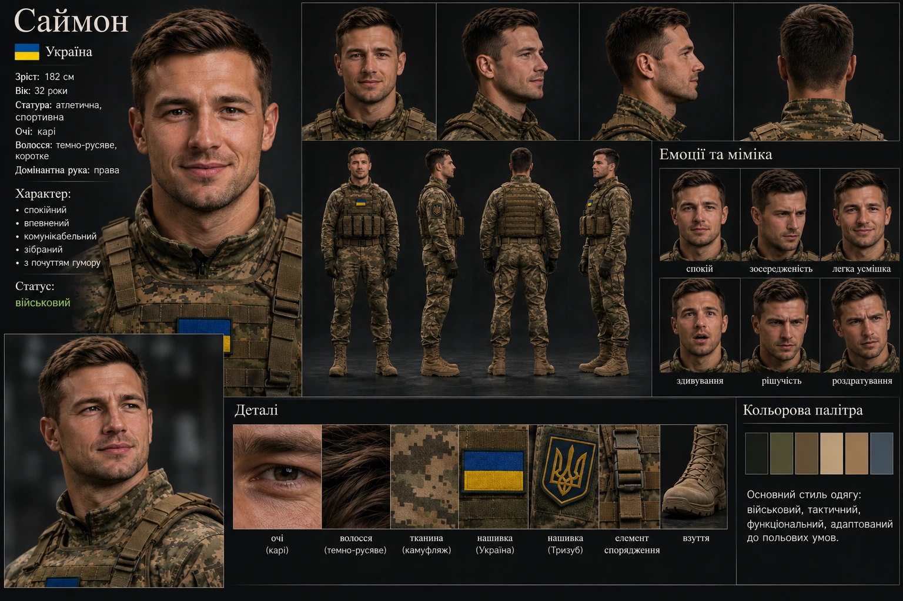

ОСНОВНА ІНФОРМАЦІЯ
Військовий із врівноваженим характером
Саймон — український військовий. Наданий автором візуальний профіль визначає його як фізично підготовленого чоловіка зі спортивною статурою. У поведінці поєднуються спокій, упевненість, комунікабельність і зібраність; водночас він не втрачає почуття гумору.
Ім’я: Саймон
Країна: Україна
Статус: військовий
Вік: 32 роки
Зріст: 182 см
Статура: атлетична, спортивна
Очі: карі
Волосся: коротке, темно-русяве
Домінантна рука: права
Характер: спокійний, упевнений, комунікабельний, зібраний, із почуттям гумору
ЗОВНІШНІСТЬ І СПОРЯДЖЕННЯ
Польова військова форма
Візуальний канон Саймона: коротке темно-русяве волосся, карі очі, атлетична спортивна статура. На профільному аркуші він зображений у польовій камуфльованій формі, тактичному спорядженні та військовому взутті. Присутні українська символіка й нашивки.
Інші біографічні відомості, військове звання, точний підрозділ і перелік здібностей у наданому зображенні не зазначені — тому тут вони не доповнюються припущеннями.